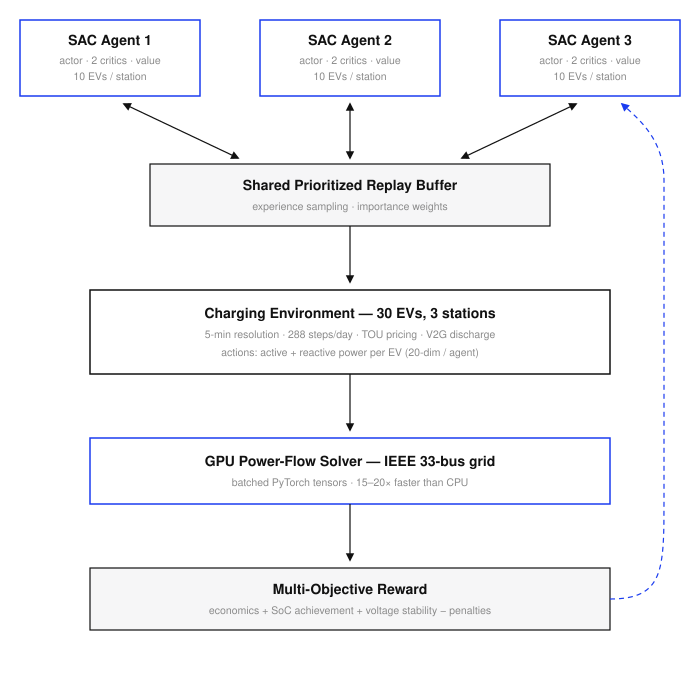

EV Charging

Context
This was a research project led primarily by a PhD student, with me contributing on specific, well-scoped tasks throughout. I wasn't the person driving the core research direction, and that was the point. My job was to be genuinely useful on a project where someone else held far more depth than I did. Learning to work that way, taking ownership of the pieces handed to me, asking questions when I was out of my depth, and building things the lead could actually rely on, taught me as much as the technical material did.
The project itself sits at the intersection of machine learning and power systems. It uses multi-agent reinforcement learning to coordinate how a fleet of electric vehicles charges, so that charging stays cheap, batteries hit their targets, and the electrical grid stays stable. Below I've split it into two parts: first what the overall system does and how, and then the specific work I contributed.
Part 1: What the System Does
As more electric vehicles come online, uncoordinated charging becomes a real problem. It drives up costs, strains the grid at peak hours, and can push voltages out of safe bounds. The system tackles this by treating charging as a control problem, deciding when and how fast each vehicle charges or discharges across a full day, over a fleet of EVs spread across multiple charging stations on a power distribution network.
The approach is a multi-agent reinforcement learning framework, where each charging station is run by its own learning agent. Rather than following fixed rules, the agents learn a strategy by trial and error, guided by a reward that balances three competing goals at once: minimizing electricity cost under time-of-use pricing, making sure every vehicle reaches its target state of charge by the time it leaves, and keeping the grid's voltage within safe limits. The agents train together but act independently, which mirrors how real charging networks are actually structured.
What makes the setup distinctive is that a GPU-accelerated grid power-flow solver runs inside the training loop. Instead of learning against a rough proxy for grid behavior, the agents are scored against a model of how their decisions actually affect voltage and power flow, and the solver is fast enough to make that practical to train on. A curriculum-learning scheme ramps the difficulty up gradually, easing the agents toward the full 80% charge target rather than demanding it from the start, which helped training converge reliably.
Part 2: What I Contributed
My role was to support the project on concrete fronts where I could take real ownership.
I worked on tuning and experimentation, adjusting the model's parameters and running systematic experiments to improve how reliably and quickly the system learned, and helping track down the instabilities that came up during training.
I built the results and visualization layer, the display mechanism we used to actually make sense of our output. This turned raw training logs into clear visuals that let us compare the charging strategies the agents learned and judge performance across experiments, so decisions about what to try next were grounded in something we could see.
And I did the background research, reviewing the literature on energy markets and on the possible architectures we could build around, so the design choices we made were informed by what had already been done in the field rather than made in a vacuum.